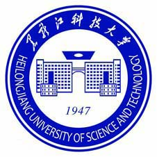

Wang Guo（汪果）
 |
硕士研究生 |
关于我
我目前在电子科技大学攻读硕士学位。 本人已于2019年6月从黑龙江科技大学计算机学院获得软件工程学士学位。
我的研究兴趣主要包括: Java后端开发、分布式系统、机器学习等。
教育经历
 |
硕士 电子科技大学 (2021.9 ~ 2024.6)
|
|  | 本科 黑龙江科技大学 (2015.9 ~ 2019.6)
|
项目经历
- 主要完成评论模块、粉丝模块、系统消息、用户验证、视频模块等
仿抖音后端项目
技术选型： SpringBoot、MySQL、Redis、MongoDB、Nginx、Nacos 等
- 主要完成评论模块、粉丝模块、系统消息、用户验证、视频模块等
<基于 Raft 算法的 K-V 分布式存储实现
技术选型： SpringBoot、MySQL、Redis、MongoDB、Nginx、Nacos 等